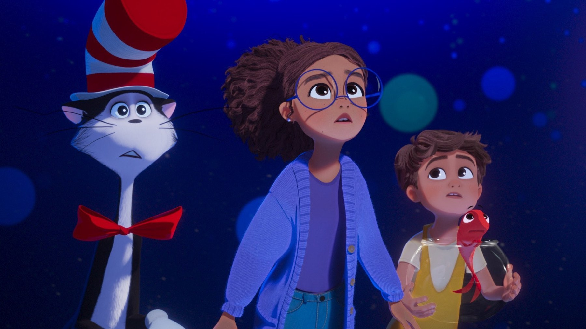

Al cinema dal 5 novembre: i film in uscita
Due agenti CIA sull'Isola di Pasqua, un thriller coreano di quasi tre ore e il gatto di Dr. Seuss: la settimana in sala, con il nostro giudizio d'attesa
Giovedì 5 novembre arriva in sala Wild Horse Nine di Martin McDonagh, il film per cui John Malkovich ha vinto la Coppa Volpi a Venezia: due agenti della CIA mandati sull'Isola di Pasqua alla vigilia del golpe in Cile. Insieme a lui escono un thriller coreano di due ore e mezza e un'avventura animata per le famiglie. Poi ci sono alcuni titoli italiani da tenere d'occhio. Per ognuno trovate la regia e la durata, perché sono i dati che servono per decidere la serata, e un giudizio d'attesa.
Il giudizio d'attesa non è una recensione, quindi nasce dalla premessa e dalle persone coinvolte, non dalla visione. Se però dopo l'uscita scriveremo una recensione, la troverete nella pagina dedicata.
Wild Horse Nine
Lo dirige Martin McDonagh e dura 118 minuti. Accanto a Malkovich recitano Sam Rockwell e Steve Buscemi, e nel cast ci sono anche Parker Posey e Tom Waits; in Italia lo distribuisce Walt Disney. La storia comincia nel 1973, pochi giorni prima che Allende venga rovesciato, e segue Chris e Lee, due agenti americani spediti sull'Isola di Pasqua con una missione che nessuno dei due capisce fino in fondo.
Venezia lo ha accolto in concorso con una lunga ovazione e ha premiato Malkovich per la miglior interpretazione maschile. Il nostro giudizio d'attesa è il più alto della settimana, perché McDonagh sa far parlare due uomini che si detestano e si servono a vicenda, e qui li mette in viaggio. Il rischio è che il tono da commedia nera tolga peso al golpe, ma lo scopriremo in sala.
C'è anche una ragione pratica per sceglierlo per primo. Ha più nomi noti in locandina degli altri titoli e, con 118 minuti, regge una serata infrasettimanale. Inoltre parla di fiducia tra colleghi che non si fidano l'uno dell'altro, quindi funziona bene da vedere in due.
Hope
Il film di Na Hong-jin esce con MUBI e dura 157 minuti. Il cast coreano è guidato da Hwang Jung-min, con Zo In-sung e Hoyeon, mentre Alicia Vikander e Michael Fassbender portano i nomi internazionali. Mentre gli incendi devastano i boschi e le comunicazioni si interrompono, in una stazione di polizia isolata gli abitanti di un villaggio vanno a caccia di una creatura misteriosa e rischiano di diventare loro la preda. Sul regista abbiamo già scritto una pagina, che trovate nella nostra scheda su <a href="/hope-na-hong-jin-quando-esce">quando esce Hope</a>.
Il nostro giudizio è di forte attesa, con una riserva: due ore e trentasette minuti sono tante, e un film di mostri regge solo se la tensione cresce di continuo. Se decidete di vederlo, scegliete una proiezione serale, perché un villaggio assediato dal fuoco e da qualcosa di sconosciuto guadagna molto dal buio in sala.
Il gatto col cappello

L'avventura animata, tratta dal personaggio di Dr. Seuss, è diretta da Alessandro Carloni ed Erica Rivinoja e dura 91 minuti. Le voci originali sono di Bill Hader e Quinta Brunson, con Matt Berry, mentre la distribuzione è di Warner Bros. Il Gatto entra nelle case e le riempie di caos, e per la prima volta il protagonista di un lungometraggio è lui.
Il giudizio d'attesa è tiepido ma simpatico. Novantuno minuti sono la durata giusta per i bambini, però molto dipende da quanto il film sappia essere dispettoso come i libri. Per chi accompagna i figli è la scelta più facile, e anche i genitori che ricordano i libri illustrati troveranno qualcosa di familiare.
Gli italiani della settimana
The Nameless Ballad è un horror firmato da Federico Zampaglione, con la paura che entra nell'ambiente musicale. Dura 87 minuti, lo distribuisce Filmclub Distribuzione e ha nel cast Alana Boden, Vincenzo De Michele e Fabrizio Ferracane. La nostra attesa è curiosa, perché Zampaglione conosce sia il rock sia il genere nero, quindi l'idea funziona sulla carta, ma un film così vive di ritmo e lo giudicheremo in sala.
Ferine di Andrea Corsini, 103 minuti, con Carolyn Bracken e Caroline Goodall, intreccia dramma e paura intorno alla maternità. Lo porta in sala Adler Entertainment. Un'altra me di Luca Brignone è invece una commedia con Margot Sikabonyi e Andrea Bosca sull'alter ego che una persona si costruisce sui social, distribuita da Altre Storie.
Se domani non torno, di Paola Randi, con Filippo Timi, dura 107 minuti e lo distribuisce Notorious Pictures. Racconta un femminicidio dal punto di vista del padre della vittima. Non gli diamo un giudizio d'attesa, perché un film così chiede rispetto prima di ogni altra cosa e conviene vederlo senza aspettative.
Cosa vedere per primo?
Con una sola serata libera noi scegliamo Wild Horse Nine. Se invece volete un film che vi resti addosso e avete tempo, andate su Hope. Con i bambini, Il gatto col cappello; per un horror italiano da guardare in compagnia, The Nameless Ballad.
La nostra scelta numero uno è Wild Horse Nine, premiato a Venezia, ma chi ama il cinema coreano dovrebbe segnarsi anche Hope. Voi da dove cominciate?
Domande frequenti
Quali film escono al cinema giovedì 5 novembre 2026?
Escono, tra gli altri, Wild Horse Nine, Hope, Il gatto col cappello, The Nameless Ballad, Ferine, Se domani non torno e Un'altra me.
Quanto dura Wild Horse Nine e chi lo dirige?
Il film è diretto da Martin McDonagh e dura 118 minuti.
Quanto dura Hope di Na Hong-jin?
Dura 157 minuti, cioè due ore e trentasette minuti, e in Italia lo distribuisce MUBI.